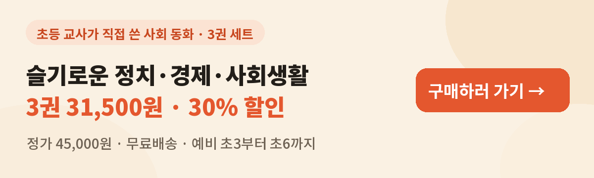
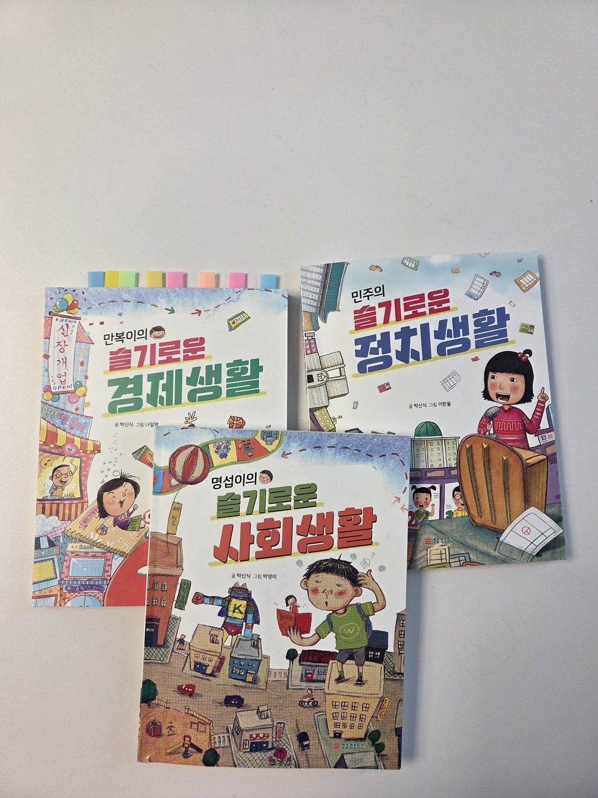
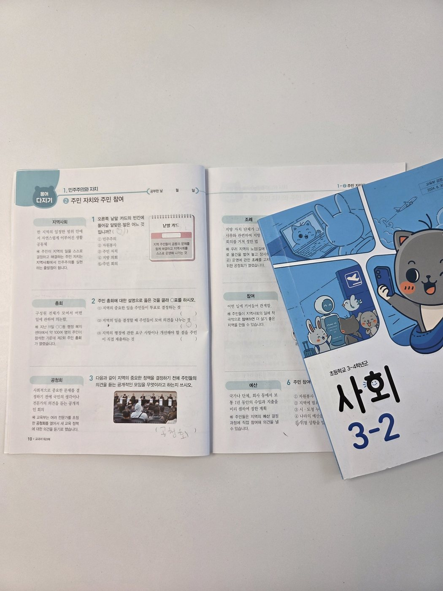
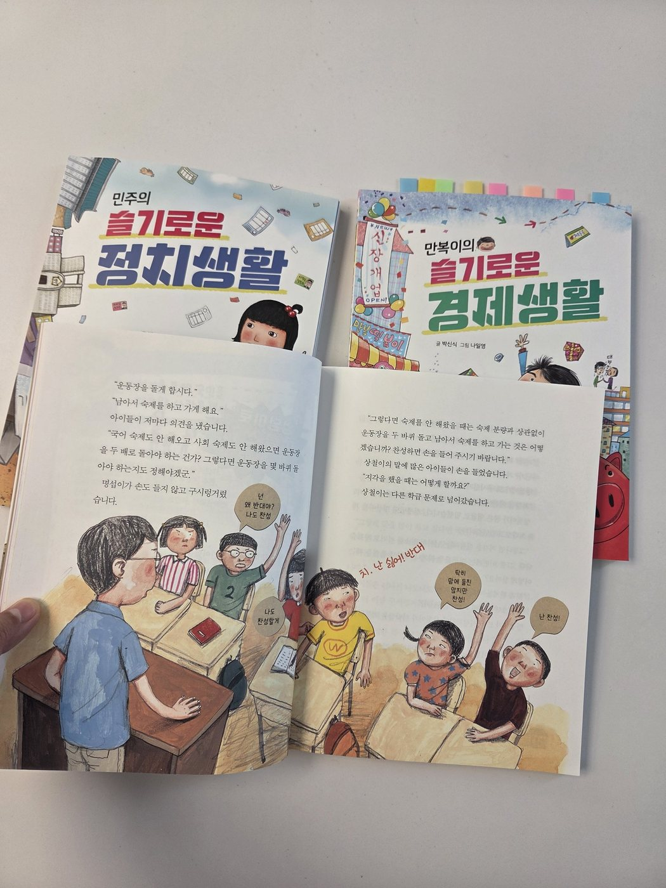
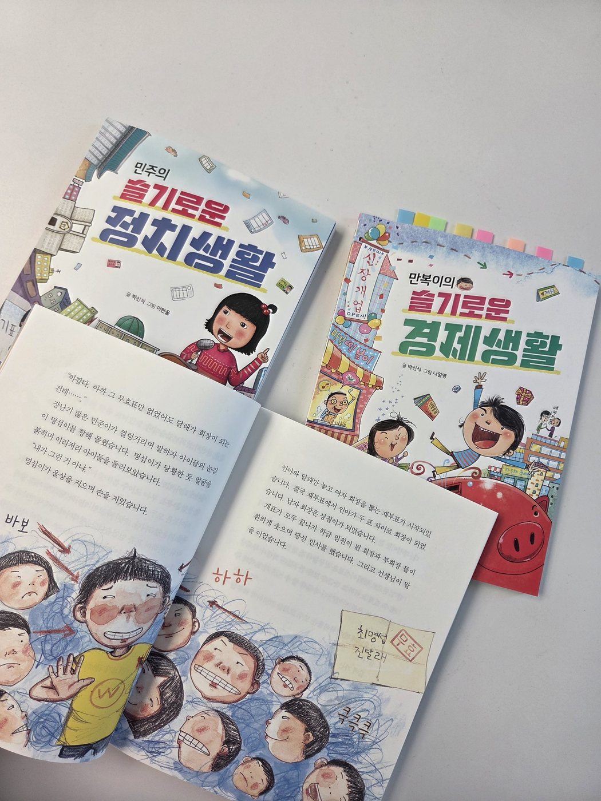
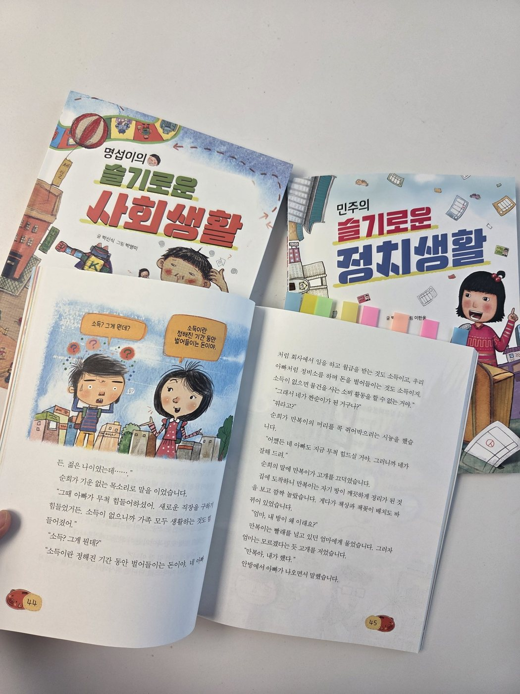
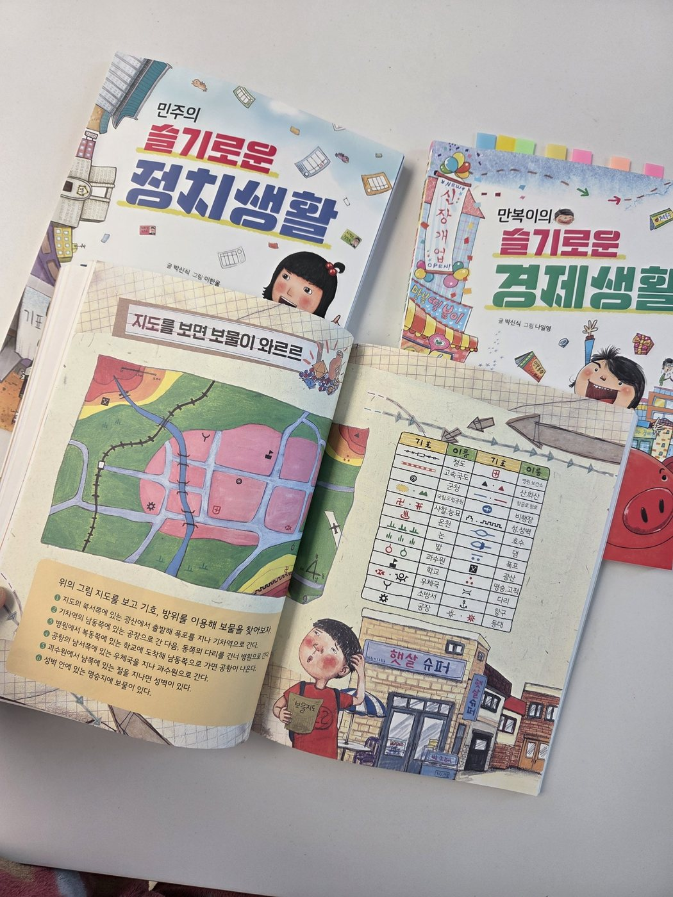
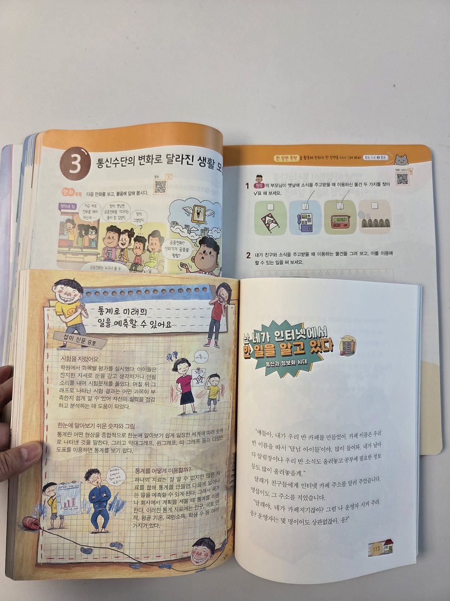
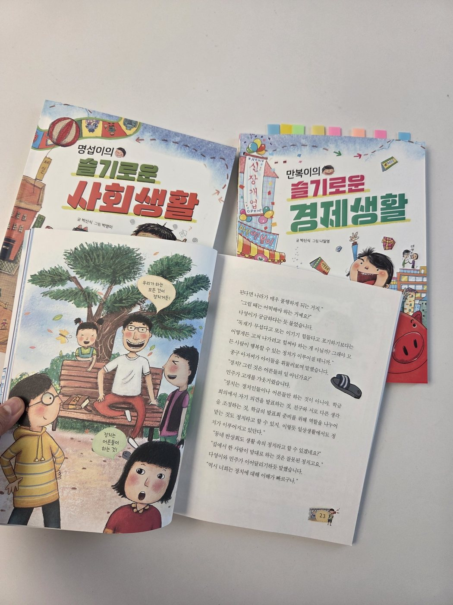
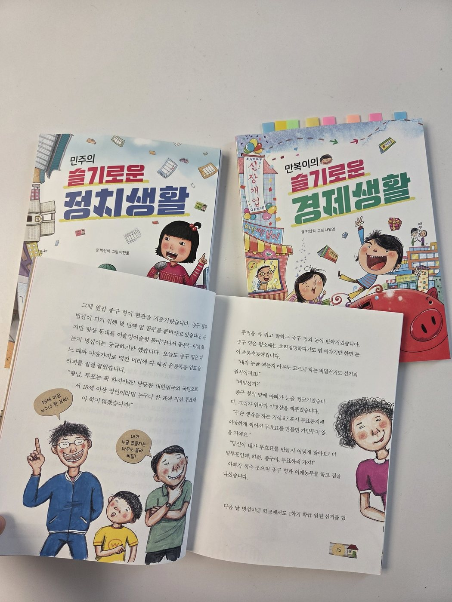

사회 교과서 안 읽는 아이라면
이 책부터 보여주세요.
근데 이 책, 어디에 쓰이는 책인지
설명이 없어서 제가 정리했어요.
요즘 사회 교과서는
글보다 그림이 많고,
문제집을 펴면 온통 글씨라
아이들이 개념을 이해할
중간 단계가 비어 있어요.
이 3권이 그 자리를 채워줍니다.
동화로 한 번, 사회 지식으로 한 번,
같은 개념을 두 번 만나게 되거든요.
그래서 이 페이지에는
32개 장이 초등 사회 몇 학년 몇 학기 개념인지
하나씩 붙여서 정리했어요.
정가 45,000원 → 31,500원 (30%)
3권 세트 무료배송이에요.
같은 시리즈지만 다루는 영역이
정확히 나뉘어 있어요.

눌러서 크게 보기한 장이 동화 → 사회 지식 순서예요.
이야기로 개념을 만나고,
바로 뒤 페이지에서 그 개념을
신문·설명 형식으로 한 번 더 정리합니다.
2022 개정 교육과정 초등 사회
단원에 맞춰 정리했어요.
3학년 2학기부터 6학년 2학기까지
이 3권으로 다 깔립니다.
| 학년·학기 | 교과서 단원 | 이 책에서 |
|---|---|---|
| 초3-2 | 사회 변화와 다양한 문화 옛날과 오늘날의 생활 모습 |
사회생활 8~11장 통계·통신·가족·의식주 |
| 초4-1 | 지도로 만나는 우리 지역 경제 활동과 지역 간 교류 |
경제생활 1·2·3·7·8장 사회생활 5장 |
| 초4-2 | 민주주의와 자치 지역 문제 해결 / 다양한 환경 |
정치생활 1·4·5·6장 사회생활 7·12장 |
| 초5-1 | 우리나라 지리 탐구 법과 인권의 보장 |
정치생활 2·3장 사회생활 6장 |
| 초6-1 | 민주주의와 시민 참여 | 정치생활 7·8·9장 사회생활 1장 |
| 초6-2 | 시장경제와 국가 간 거래 지구촌 사람들 |
경제생활 4·5·6·9·10장 정치생활 10장 · 사회생활 3·4장 |
교과서 출판사에 따라 단원 이름과 순서는
조금 다를 수 있어요. 개념은 같습니다.
각 권의 장 제목을 누르면
어느 학년 몇 학기에 붙는지
한 번에 보실 수 있어요.

눌러서 크게 보기가족회의 · 학급회의 · 마을 공원 문제로
정치를 생활 속에서 만나요.
| # | 동화 제목 | 개념 | 학년·학기 |
|---|---|---|---|
| 1 | 똥고집 독재자 | 정치의 의미 | 4-2 |
| 2 | 개똥 아지트 | 자유와 평등 | 5-1 |
| 3 | 어린이라고 무시하지 마세요 | 인권 | 5-1 |
| 4 | 회장 맘대로 | 민주주의 | 4-2 |
| 5 | 아기 숲 공원이 사라진다고? | 민주적인 결정 방법 | 4-2 |
| 6 | 아사모 스스로 해결해요 | 지방 자치 제도 | 4-2 |
| 7 | 정정당당한 도전 | 정당 | 6-1 |
| 8 | 거짓말쟁이 아저씨의 꿈 | 삼권 분립 | 6-1 |
| 9 | 초록도시 운동 본부 | 국민의 정치 참여 | 6-1 |
| 10 | 피오나의 폐지 | 국제 사회 | 6-2 |
4-2 「민주주의와 자치」·「지역 문제 해결」, 5-1 「법과 인권의 보장」, 6-1 「민주주의와 시민 참여」, 6-2 「지구촌 사람들」


용돈 관리에서 시작해 떡볶이 가게,
대출, 세금까지 이어져요.
| # | 동화 제목 | 개념 | 학년·학기 |
|---|---|---|---|
| 1 | 경제 점수 빵점 | 우리 생활과 경제 | 4-1 |
| 2 | 기름때 묻은 순희 | 다양한 산업 | 4-1 |
| 3 | 백수 아빠라도 좋아 | 소득과 직업 | 4-1 |
| 4 | 떡볶이 맛이 끝내줘요 | 수요와 공급 | 6-2 |
| 5 | 대출이 뭐기에 | 금융 기관 | 6-2 |
| 6 | 누가 그랬을까? | 자유와 경쟁 | 6-2 |
| 7 | 만복이가 사고를 쳤어요 | 물건의 유통 | 4-1 |
| 8 | 알뜰살뜰한 행복 | 현명한 소비와 저축 | 4-1 |
| 9 | 효자 메뉴 인삼한볶이 | 기업의 경제 활동 | 6-2 |
| 10 | 우리들을 위한 세금 | 국가와 세금 | 6-2 |
4-1 「경제 활동과 지역 간 교류」, 6-2 「시장경제와 국가 간 거래」

눌러서 크게 보기3학년 2학기부터 6학년까지
가장 넓게 걸쳐 있는 권이에요.
| # | 동화 제목 | 개념 | 학년·학기 |
|---|---|---|---|
| 1 | 나를 뽑아 주세요 | 대의 정치와 선거 | 6-1 |
| 2 | 엉덩이로 이름 쓰기 | 법의 필요성 | 5-1 |
| 3 | 변신 로봇이랑 자전거랑 바꾸자 | 시장과 가격 | 6-2 |
| 4 | 비밀번호 | 화폐의 역할 | 6-2 |
| 5 | 어디로 가야 할까? | 지도 읽기 | 4-1 |
| 6 | 함께 쓰는 우산 | 날씨와 기후 | 5-1 |
| 7 | 상추가 내 똥 먹었어 | 촌락과 도시 | 4-2 |
| 8 | 찌그러진 성적표 | 통계와 도표 | 3-2 |
| 9 | 난 네가 인터넷에서 한 일을 알고 있다 | 통신과 정보화 시대 | 3-2 |
| 10 | 이혼하지 마세요 | 가족 구성원과 형태 | 3-2 |
| 11 | 김치 없인 못 살아 | 의식주 문화 | 3-2 |
| 12 | 운동장에 쓰레기통을 만들어 주세요 | 여러 가지 사회문제 | 4-2 |
3-2 「사회 변화와 다양한 문화」·「옛날과 오늘날의 생활 모습」, 4-1 「지도로 만나는 우리 지역」, 5-1 「우리나라 지리 탐구」, 6-2 「시장경제와 국가 간 거래」


글밥이 많은 학습서를
힘들어하는 아이에게 맞춘 구성이에요.

눌러서 크게 보기
눌러서 크게 보기저희 첫째는 난독 경계선이라
정보가 많은 학습 도서를 힘들어하고,
재미없으면 끝까지 못 읽는 경우가 많아요.
그런데 이 책은 몇 달을 끼고 읽었어요.
사기 전에 미리 봐도 되고,
산 다음에 아이랑 같이 봐도 돼요.
| 구성 | 금액 |
|---|---|
| 정가 (15,000원 × 3권) | 45,000원 |
| 공구가 (30% 할인) | 31,500원 |
| 배송비 | 무료 |
출판사에 직접 요청해서 준비한 가격이라
수량이 한정되어 있어요. 소진되면 마감됩니다.
예비 초3부터 초6까지 볼 수 있어요.
3~4학년이면 3-2·4-1·4-2 개념을 미리 만나고,
5~6학년이면 5-1·6-1·6-2 개념을 다시 정리하는 쪽이에요.
글밥이 부담스러운 아이는 그림이 많은
사회생활부터 시작하시면 됩니다.
아이가 지금 배우는 학기부터 보셔도 돼요.
3~4학년은 사회생활·경제생활이 바로 쓰이고,
5~6학년은 정치생활이 교과서와 겹쳐요.
다만 3권이 한 줄기로 이어지는 구성이라
세트로 두면 학년이 바뀌어도 그대로 씁니다.
교과서는 개념을 순서대로 나열하고,
문제집은 그 개념을 문제로 확인해요.
이 책은 동화로 개념을 먼저 겪고
바로 뒤에서 사회 지식으로 정리해요.
그 '중간 단계'를 채우는 책이에요.
그래서 교과서를 대신하는 책은 아니고,
교과서가 어렵게 느껴지기 전에
배경지식을 깔아두는 책입니다.
네, 서울교대를 나와 초등학교에서
아이들을 가르치는 박신식 선생님이 쓰셨어요.
그래서인지 아이들이 실제로 겪는 사건
(가족회의·학급회의·알뜰매장·공원 문제)이
이야기의 소재로 쓰여 있어요.
3권 세트 무료배송이고,
수량 한정이라 소진되면 마감돼요.
구매 링크는 위 배너와 아래 버튼,
두 곳에 걸어뒀습니다.
🛒 구매는 여기서 하시면 돼요
31,500원 · 무료배송 (정가 45,000원)
수량 한정이라 소진 시 마감돼요.
고르시다가 막히면
인스타(@busy_m.o.m) 댓글이나
DM 주세요.
아이 학년 알려주시면
어느 장부터 보면 좋을지
맞춰서 골라 드릴게요 💛